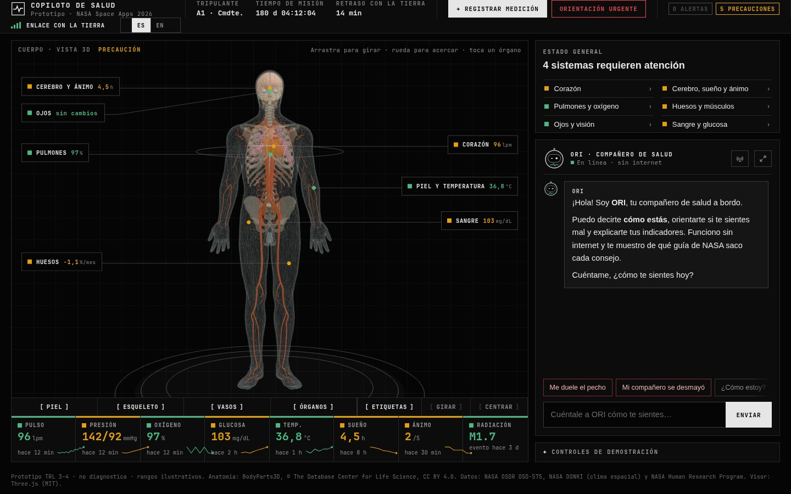
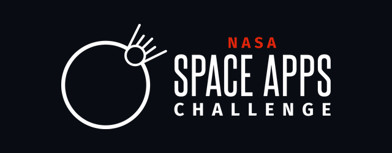

01 / UNA CUESTIÓN DE TIEMPO
En el espacio,
la distancia se mide
en kilómetros.
Cuando tu salud cambia,
se mide en tiempo.
PODER CONTINUAR
A BORDO.
02 / EL DESAFÍO
Los datos
están aquí.
El médico
está lejos.
Una tripulación entrenada.
Un cambio en sus indicadores.
Una respuesta que puede tardar.
¿Cómo mantener el seguimiento mientras llega la orientación?
Las misiones lejanas necesitan mayor autonomía médica. Contexto NASA ↗
03 / CONOCE A ORI
Un copiloto de salud.
En la propia nave.
Reúne registros y tendencias.
Permite consultar guías conversando.
Mantiene el seguimiento local.

04 / NUESTRA PROPUESTA
Que la distancia
no interrumpa
el cuidado.
ORI. Apoyo para comprender tus datos
y encontrar el siguiente paso.

Prototipo educativo. Orientación pendiente de validación clínica. Sin respaldo oficial de NASA.